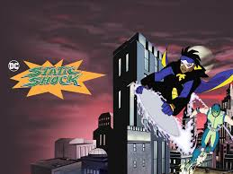

About Static
Static Shock is a teenager who uses his electrical powers to protect his city.
Static and his signature pose
Static's Characteristics
- He got his powers during an accident at the docks
- He uses electricity to make a garbage can lid fly
- He will always fight to keep his family and city safe
Static's Friends
As the regular high schooler Virgil Hawkins, Static made a lifelong friend in Richie. Thankfully, Richie also gains powers and can help Virgil when he becomes Static Shock. Click on the links below to read more about Richie.